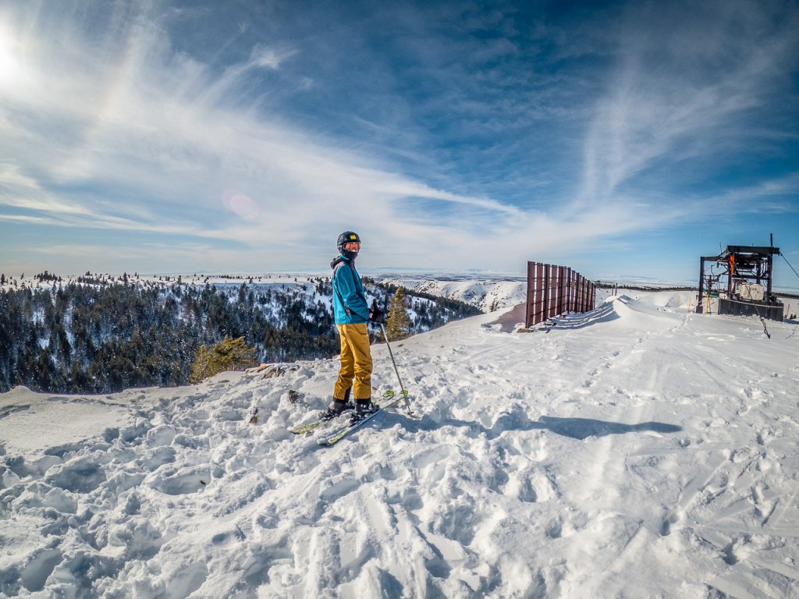

Winter
Kelly Canyon Ski Area
This small family owned ski area is just 45 minutes away and is very affordable.

Lava Hot Springs
This popular hot spring located in a town of the same name is a popular destination year-round. A communal pool gives access to the refreshing mineral waters. About 1.5 hours from Rexburg.
Goldbug Hot Springs
Located 20 minutes south of Salmon Idaho is this natural mountain hot spring. From the parking lot it is about an hour hike. Approximately 3 hours from Rexburg.
Grand Targhee Ski Resort
This picturesque ski resort is an hour east of Rexburg on the western side of the Teton range.